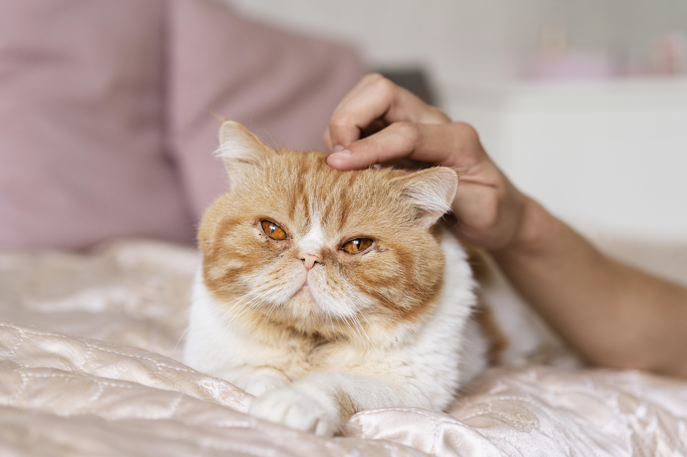

Kedi Bakımı: Sağlıklı ve Mutlu Patiler İçin Rehber

Kediler, zarif ve bağımsız yapılarıyla evlerimizi neşelendiren dostlarımızdır. Ancak sağlıklı ve uzun bir yaşam sürmeleri için düzenli bakım ve ilgiye ihtiyaç duyarlar. İşte kedinizin bakımında dikkat etmeniz gereken temel noktalar:
1. Beslenme: Doğru ve Dengeli Diyet
Kedinizin genel sağlığı için uygun bir beslenme düzeni önemlidir.
Mama seçimi: Yaşına, ırkına ve sağlık durumuna uygun kaliteli bir kuru veya yaş mama tercih edin. Kediler için protein oranı yüksek mamalar idealdir.
Öğün düzeni: Yetişkin kediler genellikle günde 2 öğünle beslenebilir. Yavru kediler ise daha sık ve küçük porsiyonlarla beslenmelidir.
Su ihtiyacı: Kedinizin taze suya sürekli erişimi olduğundan emin olun. Özellikle kuru mama tüketen kediler için su tüketimi çok önemlidir.
2. Tüy ve Deri Bakımı
Kedinizin tüylerinin ve cildinin sağlıklı kalması için düzenli bakım gereklidir.
Tüy tarama: Uzun tüylü kedileri her gün, kısa tüylüleri ise haftada birkaç kez tarayarak tüy dökülmesini azaltabilir ve tüy yumaklarının oluşumunu önleyebilirsiniz.
Banyo: Kediler genellikle kendilerini temizlese de gerektiğinde kedi şampuanıyla nazikçe yıkayabilirsiniz. Ancak bu sık sık yapılmamalıdır.
3. Kum Kabı Temizliği
Kediler temiz alanları sever. Kum kabının düzenli olarak temizlenmesi, kedinizin hijyenik bir ortamda ihtiyaçlarını gidermesini sağlar.
Kum seçimi: Topaklaşan, kokuyu hapseden ve kedinizin rahat edeceği bir kedi kumu tercih edin.
Temizlik sıklığı: Günlük olarak topakları temizleyin ve haftalık olarak tüm kumu değiştirin.
4. Veteriner Kontrolleri
Kedinizin düzenli veteriner kontrolleri, olası sağlık sorunlarının önüne geçmek için hayati öneme sahiptir.
Aşılama: Karma aşı, kuduz ve diğer gerekli aşıları zamanında yaptırın.
Parazit kontrolü: İç ve dış parazit tedavisi, kedinizin sağlığını korumak için düzenli olarak uygulanmalıdır.
Kısırlaştırma: Eğer yavru planlamıyorsanız, kısırlaştırma kedinizin sağlığına olumlu katkılar sağlayabilir.
5. Zihinsel ve Fiziksel Aktivite
Kedinizin enerjisini atması ve zihinsel olarak uyarılması, mutluluğu için önemlidir.
Oyuncaklar: Tüylü çubuklar, top oyuncaklar veya lazer ışıkları gibi aktivitelerle onun oyun ihtiyacını karşılayabilirsiniz.
Tırmalama direkleri: Tırmalama davranışı doğal bir ihtiyaçtır. Mobilyalarınızı korumak için tırmalama direkleri bulundurmayı unutmayın.
6. Tırnak ve Diş Bakımı
Kedinizin genel sağlığı için tırnak ve diş bakımına özen gösterin.
Tırnak kesimi: Kedinizin tırnaklarını düzenli olarak kısaltarak mobilyalarınızı koruyabilir ve tırnak batmasını önleyebilirsiniz.
Diş temizliği: Özel kedi diş fırçaları ve macunları kullanarak dişlerinin sağlıklı kalmasını sağlayabilirsiniz.
7. Sevgi ve İlgiyi İhmal Etmeyin
Kediler bağımsız gibi görünse de sevgiye ve ilgiye ihtiyaç duyarlar.
Onlarla zaman geçirin: Oyun oynayın, onları sevin ve ilgilenin.
Kendi alanını sağlayın: Kedinizin dinlenebileceği sakin ve rahat bir alan oluşturun.